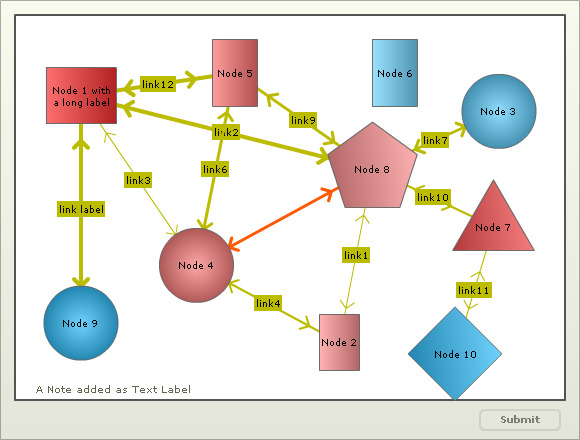
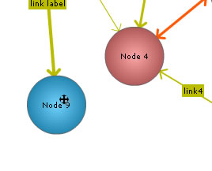

The drag node chart is a specialized type of chart where each data set is shown on the chart as a drag-able node. Perfect for network diagrams, hierarchy structures etc., this chart provides a highly intuitive interface for your end users to visually adjust related entities, link them and even add new ones. You can take visual inputs from your users using this chart and then submit the final positions of the nodes to your scripts for further processing.
Key features of this chart are:
- Each data set on the chart can be represented as a drag-able node of various shapes and sizes - Circles, Rectangles, Polygons
- Nodes can contain image and text together
- Option to set the chart in view or edit mode. In view mode, the end user can just drag the nodes (unless allowDrag is not explicitly set to 0 for that node/data-set). In edit mode, the user can add/edit/delete nodes, add/edit/delete connectors, add/delete text labels etc.
- Links can be defined between any two nodes on the chart. Links can have arrows at both side or any side. Each link has a label and a strength factor
- Option to visually add nodes, connectors and labels at run-time
- Options to visually edit existing or newly created nodes and connectors at run-time
- Using JavaScript, it's possible to filter the links dynamically at run-time to show only the n strongest links
- Each node can have a link which can be activated using the context menu. End users can switch between drag mode and link mode
- End users have option to pin/un-pin a node to allow/disallow dragging of that particular node
- Using JavaScript, updated positions of node can be retrieved
- Updated positions of node can be sent back to server for processing
A very basic drag-node chart looks as under:

And the data for same can be listed as under:
<chart palette='2' xAxisMinValue='0' xAxisMaxValue='100' yAxisMinValue='0' yAxisMaxValue='100' is3D='1' showFormBtn='1' viewMode='0'>
<dataset seriesName='DS1'>
<set x='12' y='79' width='70' height='56' name='Node 1 with a long label'
color='FE3233' id='1'/>
<set x='59' y='15' width='40' height='56' name='Node 2'
color='FE9191' id='2' link='n-http://www.fusioncharts.com'/>
<set x='88' y='75' radius='37' shape='circle' name='Node 3'
color='62D0FE' id='3' link='n-http://www.fusioncharts.com'/>
<set x='33' y='35' radius='37' shape='circle' name='Node 4'
color='FE8181' id='4' link='n-http://www.fusioncharts.com'/>
<set x='40' y='85' width='45' height='67' name='Node 5'
color='FE7272' BorderColor='ff5904' id='5' />
<set x='69' y='85' width='45' height='67' name='Node 6'
color='72D4FE' id='6' link='n-http://www.fusioncharts.com'/>
<set x='87' y='45' radius='47' shape='polygon' numSides='3' name='Node 7'
color='FE5151' id='7' link='n-http://www.fusioncharts.com'/>
<set x='65' y='60' radius='47' shape='polygon' numSides='5' name='Node 8'
color='FE9191' id='8' link='n-http://www.fusioncharts.com'/>
<set x='12' y='20' radius='37' shape='circle' name='Node 9'
color='33C1FE' id='9' link='n-http://www.fusioncharts.com'/>
<set x='80' y='12' radius='47' shape='polygon' numSides='4' name='Node 10'
color='33C1FE' id='10' link='n-http://www.fusioncharts.com'/>
</dataset>
<connectors color='FF0000' stdThickness='5'>
<connector strength='0.96' label='link label' from='1' to='9' color='BBBB00' arrowAtStart='1' arrowAtEnd='1' />
<connector strength='0.8' label='link12' from='1' to='5' color='BBBB00' arrowAtStart='1' arrowAtEnd='1' />
<connector strength='0.8' label='link2' from='1' to='8' color='BBBB00' />
<connector strength='0.3' label='link3' from='1' to='4' color='BBBB00' arrowAtStart='1' arrowAtEnd='1' />
<connector strength='0.4' label='link4' from='2' to='4' color='BBBB00' arrowAtStart='1' arrowAtEnd='1' />
<connector strength='0.6' label='link5' from='4' to='2' color='BBBB00' arrowAtStart='1' arrowAtEnd='1' />
<connector strength='0.33' label='link1' from='2' to='8' color='BBBB00'/>
<connector strength='0.66' label='link7' from='8' to='3' color='BBBB00' arrowAtStart='1' arrowAtEnd='1' />
<connector strength='0.7' label='link6' from='4' to='5' color='BBBB00' arrowAtStart='1' arrowAtEnd='1' />
<connector strength='0.6' from='4' to='8' color='FF5904' arrowAtStart='1' arrowAtEnd='1'/>
<connector strength='0.6' label='link9' from='5' to='8' color='BBBB00' />
<connector strength='0.5' label='link10' from='7' to='8' color='BBBB00' arrowAtStart='1' arrowAtEnd='1' />
<connector strength='0.3' label='link11' from='7' to='10' color='BBBB00'/>
</connectors>
<labels>
<label text = 'A Note added as Text Label' x = '18' y = '5' />
</labels>
</chart>
{
"chart":{
"palette":"2",
"xaxisminvalue":"0",
"xaxismaxvalue":"100",
"yaxisminvalue":"0",
"yaxismaxvalue":"100",
"is3d":"1",
"showformbtn":"1",
"viewmode":"0"
},
"dataset":[{
"seriesname":"DS1",
"data":[{
"x":"12",
"y":"79",
"width":"70",
"height":"56",
"name":"Node 1 with a long label",
"color":"FE3233",
"id":"1"
},
{
"x":"59",
"y":"15",
"width":"40",
"height":"56",
"name":"Node 2",
"color":"FE9191",
"id":"2",
"link":"n-http://www.fusioncharts.com"
},
{
"x":"88",
"y":"75",
"radius":"37",
"shape":"circle",
"name":"Node 3",
"color":"62D0FE",
"id":"3",
"link":"n-http://www.fusioncharts.com"
},
{
"x":"33",
"y":"35",
"radius":"37",
"shape":"circle",
"name":"Node 4",
"color":"FE8181",
"id":"4",
"link":"n-http://www.fusioncharts.com"
},
{
"x":"40",
"y":"85",
"width":"45",
"height":"67",
"name":"Node 5",
"color":"FE7272",
"bordercolor":"ff5904",
"id":"5"
},
{
"x":"69",
"y":"85",
"width":"45",
"height":"67",
"name":"Node 6",
"color":"72D4FE",
"id":"6",
"link":"n-http://www.fusioncharts.com"
},
{
"x":"87",
"y":"45",
"radius":"47",
"shape":"polygon",
"numsides":"3",
"name":"Node 7",
"color":"FE5151",
"id":"7",
"link":"n-http://www.fusioncharts.com"
},
{
"x":"65",
"y":"60",
"radius":"47",
"shape":"polygon",
"numsides":"5",
"name":"Node 8",
"color":"FE9191",
"id":"8",
"link":"n-http://www.fusioncharts.com"
},
{
"x":"12",
"y":"20",
"radius":"37",
"shape":"circle",
"name":"Node 9",
"color":"33C1FE",
"id":"9",
"link":"n-http://www.fusioncharts.com"
},
{
"x":"80",
"y":"12",
"radius":"47",
"shape":"polygon",
"numsides":"4",
"name":"Node 10",
"color":"33C1FE",
"id":"10",
"link":"n-http://www.fusioncharts.com"
}
]
}
],
"connectors":[{
"color":"FF0000",
"stdthickness":"5",
"connector":[{
"strength":"0.96",
"label":"link label",
"from":"1",
"to":"9",
"color":"BBBB00",
"arrowatstart":"1",
"arrowatend":"1"
},
{
"strength":"0.8",
"label":"link12",
"from":"1",
"to":"5",
"color":"BBBB00",
"arrowatstart":"1",
"arrowatend":"1"
},
{
"strength":"0.8",
"label":"link2",
"from":"1",
"to":"8",
"color":"BBBB00"
},
{
"strength":"0.3",
"label":"link3",
"from":"1",
"to":"4",
"color":"BBBB00",
"arrowatstart":"1",
"arrowatend":"1"
},
{
"strength":"0.4",
"label":"link4",
"from":"2",
"to":"4",
"color":"BBBB00",
"arrowatstart":"1",
"arrowatend":"1"
},
{
"strength":"0.6",
"label":"link5",
"from":"4",
"to":"2",
"color":"BBBB00",
"arrowatstart":"1",
"arrowatend":"1"
},
{
"strength":"0.33",
"label":"link1",
"from":"2",
"to":"8",
"color":"BBBB00"
},
{
"strength":"0.66",
"label":"link7",
"from":"8",
"to":"3",
"color":"BBBB00",
"arrowatstart":"1",
"arrowatend":"1"
},
{
"strength":"0.7",
"label":"link6",
"from":"4",
"to":"5",
"color":"BBBB00",
"arrowatstart":"1",
"arrowatend":"1"
},
{
"strength":"0.6",
"from":"4",
"to":"8",
"color":"FF5904",
"arrowatstart":"1",
"arrowatend":"1"
},
{
"strength":"0.6",
"label":"link9",
"from":"5",
"to":"8",
"color":"BBBB00"
},
{
"strength":"0.5",
"label":"link10",
"from":"7",
"to":"8",
"color":"BBBB00",
"arrowatstart":"1",
"arrowatend":"1"
},
{
"strength":"0.3",
"label":"link11",
"from":"7",
"to":"10",
"color":"BBBB00"
}
]
}
],
"labels":{
"label":[{
"text":"A Note added as Text Label",
"x":"18",
"y":"5"
}
]
}
}
How to set the nodes draggable?
The end user can drag any node in the above chart as shown below:

The nodes can be customized so that these can not be dragged. To do this, allowDrag attribute of <dataset> or <set> element needs to be set to 0 for that required dataset or node.
How to pin a node/label?
If for some purpose, the user doesn't want any node or label to be drag-able, he can pin it by using the right click context menu of any node. That node or label gets fixed and cannot be dragged unless it is un-pinned (using the same context menu).

You can un-pin the node using the same context menu in order to make it drag-able again.

How to toggle between dragable mode and link mode of the nodes
You can define links for each node on the chart. When you then view the chart, the nodes will still be drag-able (unless you set the parameter to enable links when started by setting enableLink='1' in <chart> ).
The end user can switch between link mode and drag mode using the context menu.

How to switch on the edit mode to allow addition, alternation and deletion of nodes, connectors and labels ?
By default, a drag node chart runs in view mode which does not allow the user to add/edit/delete nodes, connectors or labels. To set the view mode off and enable the edit mode you need to set viewMode='0' in <chart> element.
In this mode the end user can do the following:
- Right click on a blank space of the chart to create a node or a label
- Right click on a node to edit or delete the node
- Right click on a node to create a connector from that node to another node
- Right click on a connector to edit or delete the connector
- Right click on a label to delete the label
We will see in details how to achieve these in the following pages.